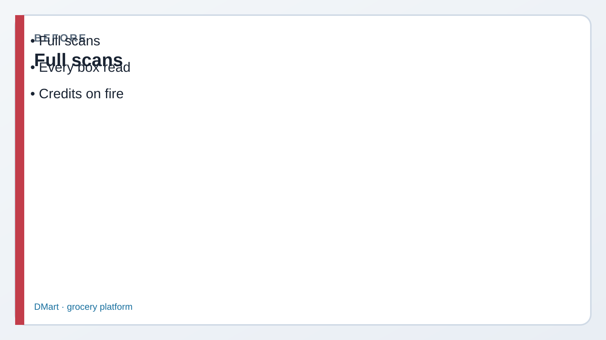
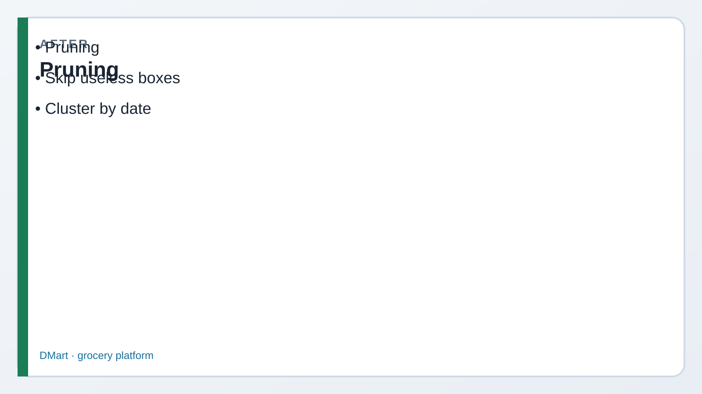

Read every Teach first section before you copy SQL.
Snowflake doesn’t store a table as one giant spreadsheet file.
It chops data into compressed micro-partitions — and skips the ones your filter doesn’t need.
1
Picture first. Look at BEFORE/AFTER → read the comic → then run tiny SQL.
If a paragraph feels heavy, skip to the next comic strip — Dev explains it out loud for you.
Business problem
Morgan: “Board queries on two years of orders are slow.”
Kai wants to “make the warehouse bigger.” Riley suspects we’re scanning months we don’t need.
Solution you will build
A tiny ORDERS_BY_DATE table, a date-filtered SELECT (pruning story),
CLUSTER BY (ORDER_DATE), and awareness of SYSTEM$CLUSTERING_INFORMATION + storage metrics.

Before Full scans forever.

After Pruning skips useless micro-partitions.
Episode 03 · Start here
Kai wants a bigger engine. Dev draws shelves.
KaiAnalyst — still learning
If I only need March orders, why does Snowflake even look at January?
DevCoach — explains why
It shouldn’t — that’s pruning. Each micro-partition remembers min/max dates. Filter March → skip shelves that only hold Jan/Feb.
Clustering keeps related dates on fewer shelves so pruning works better on large tables.
If we always filter by order date, that column is the pruning hero — put it on the table for real.
DevCoach
Right. Today’s table is tiny so you won’t see dramatic Profile wins — you’re learning the story the exam tests.
1 Create orders-by-date + insert
What this does: Builds LAB.ORDERS_BY_DATE with rows across Jan–Apr.
SQL · table + rows
USE ROLE ROLE_CORE_LAB_ADMIN;
USE WAREHOUSE WH_CORE_XS;
USE DATABASE ALPINE_RETAIL;
USE SCHEMA LAB;
CREATE OR REPLACE TABLE LAB.ORDERS_BY_DATE (
ORDER_ID NUMBER, ORDER_DATE DATE,
CUSTOMER_ID NUMBER, AMOUNT NUMBER(10,2)
);
Add April rows from sql/03_micropartitions.sql (or run that file).
✓ Table exists with multi-month ORDER_DATE values
Before Step 2
Concrete pruning example
MorganManager
I only want March revenue. Don’t charge me to read January.
DevCoach
WHERE ORDER_DATE BETWEEN '2024-03-01' AND '2024-03-31' — on large tables, pruning skips non-March micro-partitions.
2 Filter on date (pruning story)
What this does: Returns only March rows — the same pattern that enables partition pruning at scale.
SQL · March filter
SELECT *
FROM LAB.ORDERS_BY_DATE
WHERE ORDER_DATE BETWEEN '2024-03-01'
AND '2024-03-31';
✓ Two March rows (order 5 and 6) — say “pruning skips other months”
Before Step 3
Sam: “Clustering isn’t free.”
SamCompliance
If we cluster every table “for hygiene,” what happens to the bill?
DevCoach
Automatic clustering consumes credits. Use it when filters miss partitions and the table is large enough that reclustering pays back.
3 CLUSTER BY + clustering info
What this does: Declares a clustering key and calls the system function (may look sparse on tiny data — still know the name).
SQL · cluster + info
ALTER TABLE LAB.ORDERS_BY_DATE
CLUSTER BY (ORDER_DATE);
SELECT SYSTEM$CLUSTERING_INFORMATION(
'ALPINE_RETAIL.LAB.ORDERS_BY_DATE'
);
✓ ALTER succeeds; function returns JSON-ish clustering details
4 Storage monitoring awareness
What this does: Looks at table listing and storage metrics (active / time travel / fail-safe bytes).
SQL · SHOW + metrics
SHOW TABLES LIKE 'ORDERS_BY_DATE' IN SCHEMA LAB;
SELECT TABLE_NAME, ACTIVE_BYTES,
TIME_TRAVEL_BYTES, FAILSAFE_BYTES
FROM TABLE(INFORMATION_SCHEMA.TABLE_STORAGE_METRICS)
WHERE TABLE_CATALOG = 'ALPINE_RETAIL'
AND TABLE_NAME = 'ORDERS_BY_DATE';
✓ Metrics row appears (byte counts may be small on demo)
Exam presses further — say these out loud
Q1. When should you NOT add a clustering key?
Say: Small tables, tables already well-ordered for your filters, or when you can’t prove pruning is the bottleneck. Clustering has ongoing credit cost — don’t “cluster everything.”
Q2. What costs money with reclustering / automatic clustering?
Say: Compute credits to rewrite micro-partitions as data lands out of order. It’s a maintenance cost traded against better pruning / less scan.
Q3. Roughly how big is a micro-partition (conceptual)?
Say: Contiguous compressed storage units — commonly described around ~16 MB uncompressed equivalent. Exam cares that tables are split into many micro-partitions with min/max metadata.
Q4. How does pruning use a date filter?
Say: Snowflake compares the WHERE range to each partition’s stored min/max for that column and skips partitions that can’t contain matching rows.
Q5. Bigger warehouse vs better pruning — which first?
Say: Profile first. If you’re scanning partitions you don’t need, size alone wastes credits. Fix filters / clustering / data layout before blindly scaling WH.
Priya’s wrap-up (say this out loud)
“Tables live as micro-partitions with min/max metadata. Filtering ORDER_DATE lets pruning skip months we don’t need.
CLUSTER BY can help large tables but costs credits — I won’t cluster tiny demos for production hygiene.
SYSTEM$CLUSTERING_INFORMATION and TABLE_STORAGE_METRICS are how I inspect health and bytes.”
Next
Lab 04 — permanent, transient, temporary, external, Iceberg, and Dynamic Tables.